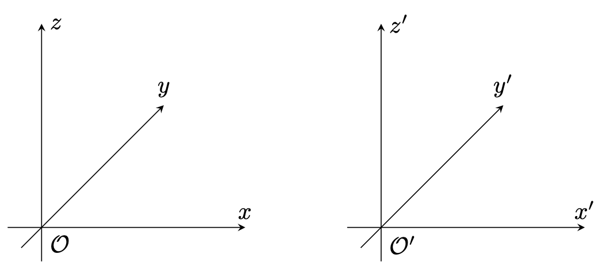
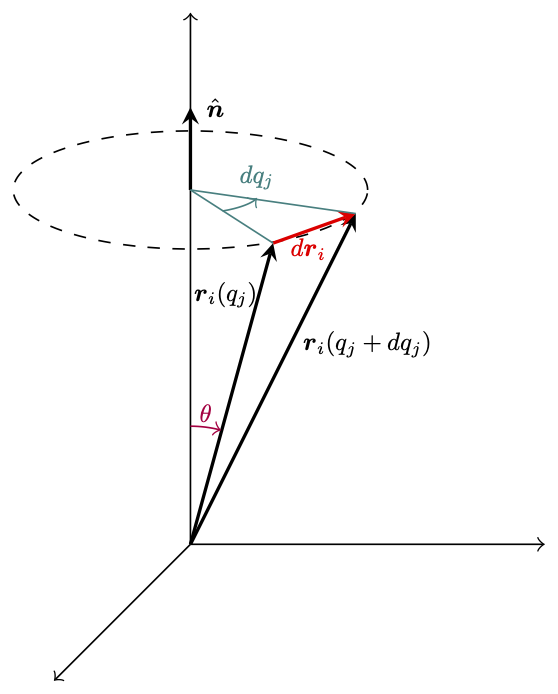
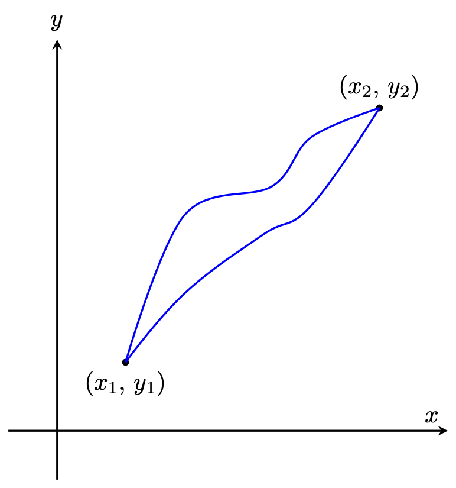
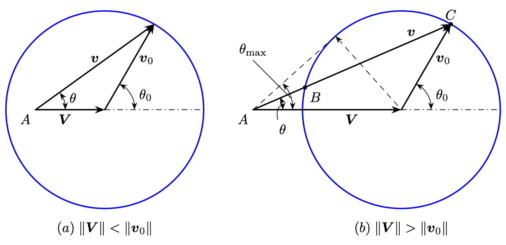
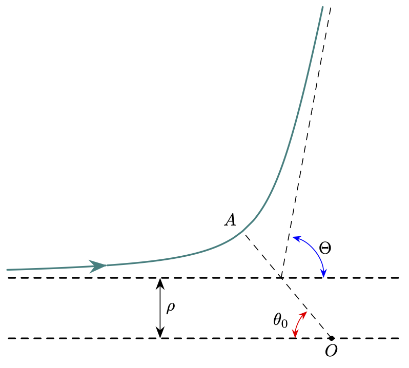
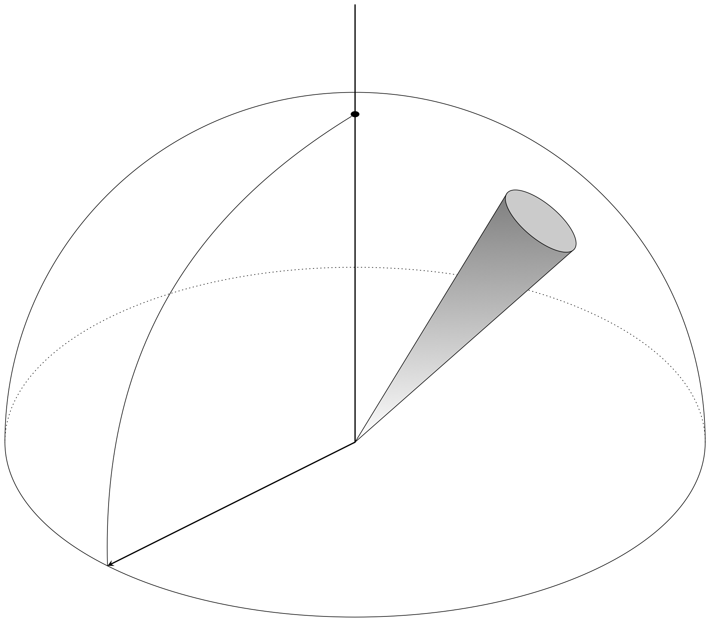

\documentclass[border=3pt,tikz]{standalone}
\usepackage{amsmath}
%\usetikzlibrary{calc}
%\usetikzlibrary{decorations.pathmorphing} % for snakes
\usetikzlibrary {shapes.geometric} % for star
\usetikzlibrary{bending} % for arrow head angle
\usetikzlibrary{angles,quotes} % for pic (angle labels)
\usetikzlibrary{arrows.meta} % for arrow size
\usetikzlibrary {3d}
\usetikzlibrary {arrows}
\usetikzlibrary{shapes.geometric}
\begin{document}
\begin{tikzpicture} %[=>stealth]
\coordinate (O) at (0,0);
\coordinate (O1) at (2.5, -0.5);
\draw [->] (O) -- (xyz cs:x=3);
\draw [->] (O) -- (xyz cs:y=3);
\draw [->] (O) -- (xyz cs:z=3);
\draw [->] (O1) -- (xyz cs:x=5.5, y=-0.5);
\draw [->] (2.5,-0.5) -- (xyz cs:x=2.5, y=2.5);
\draw [->] (2.5,-0.5) -- (xyz cs:x=2.5, y=-0.5, z=3);
\node[below, scale=.7] at (O) {$\mathcal{O}$};
\node[below, scale=.7] at (O1) {$\mathcal{O^\prime}$};
\draw [thick, -{stealth}] (0, 0) -- (xyz cs:x=2,y=2, z=1);
\node[below right, scale=.7] at (xyz cs:x=1,y=1, z=0.5) {$\boldsymbol{r}$};
\draw [thick, -{stealth}] (2.5, -0.5) --(xyz cs:x=2, y=2, z = 1);
\node[left, scale=.7] at (xyz cs:x=2.25, y=0.75, z = 0.5) {$\boldsymbol{r}^\prime$};
\end{tikzpicture}
\end{document}
\documentclass[border=3pt,tikz]{standalone}
\usepackage{amsmath}
%\usetikzlibrary{calc}
%\usetikzlibrary{decorations.pathmorphing} % for snakes
\usetikzlibrary {shapes.geometric} % for star
\usetikzlibrary{bending} % for arrow head angle
\usetikzlibrary{angles,quotes} % for pic (angle labels)
\usetikzlibrary{arrows.meta} % for arrow size
\usetikzlibrary {3d}
\usetikzlibrary {arrows}
\usetikzlibrary{shapes.geometric}
\begin{document}
\begin{tikzpicture}[x=0.5cm,y=0.5cm,z=0.3cm,>=stealth]
\draw[->] (xyz cs:x=-1) -- (xyz cs:x=6) node[above] {$x$};
\draw[->] (xyz cs:y=-1) -- (xyz cs:y=6) node[right] {$z$};
\draw[->] (xyz cs:z=-1) -- (xyz cs:z=6) node[above] {$y$};
\node[anchor= north west] at (xyz cs:x=0) {$\mathcal{O}$};
\draw[->] (xyz cs:x=9) -- (xyz cs:x=16) node[above] {$x'$};
\draw[->] (xyz cs:x=10, y=-1) -- (xyz cs:x=10, y=6) node[right] {$z'$};
\draw[->] (xyz cs:x=10, z=-1) -- (xyz cs:x=10, z=6) node[above] {$y'$};
\node[anchor= north west] at (xyz cs:x=10) {$\mathcal{O}'$};
\end{tikzpicture}
\end{document}
\documentclass[border=3pt,tikz]{standalone}
\usepackage{amsmath}
%\usetikzlibrary{calc}
%\usetikzlibrary{decorations.pathmorphing} % for snakes
\usetikzlibrary {shapes.geometric} % for star
\usetikzlibrary{bending} % for arrow head angle
\usetikzlibrary{angles,quotes} % for pic (angle labels)
\usetikzlibrary{arrows.meta} % for arrow size
\usetikzlibrary {3d}
\usetikzlibrary {arrows}
\usetikzlibrary{shapes.geometric}
\begin{document}
\begin{tikzpicture}[scale=1.4, rotate=0]
\coordinate (O) at (0,0);
\coordinate (A) at (4,0);
\coordinate (B) at (0,-4);
\coordinate (P1) at (1,0);
\coordinate (R2) at (4,-3.5);
\draw[-stealth, thick] (-0.5,0) -- (A);
\node [anchor=south east] at (A) {$x$};
\draw[-stealth, thick] (0,0.5) -- (B);
\node [anchor=south east] at (B) {$y$};
\draw node[fill,circle, scale=0.3] at (0.7,0) {};
\draw node[anchor=south] at (0.7,0) {$1$};
\draw node[fill,circle, scale=0.3] at (R2) {};
\draw node[anchor=north] at (R2) {$2$};
\draw [blue, ultra thick] plot [smooth, tension=0.7] coordinates {(0.7,0) (1.5,-0.5) (2,-1.7) (2.5, -2.3) (3.4,-2.9) (4,-3.5)};
\draw [-stealth, thick] (2.2,-1.7)--(2.7, -2.15);
\draw node[anchor=south] at (2.2, -1.7) {$\boldsymbol{v}$};
\end{tikzpicture}
\end{document}
\documentclass[border=3pt,tikz]{standalone}
\usepackage{amsmath}
%\usetikzlibrary{calc}
%\usetikzlibrary{decorations.pathmorphing} % for snakes
\usetikzlibrary {shapes.geometric} % for star
\usetikzlibrary{bending} % for arrow head angle
\usetikzlibrary{angles,quotes} % for pic (angle labels)
\usetikzlibrary{arrows.meta} % for arrow size
\usetikzlibrary {3d}
\usetikzlibrary {arrows}
\usetikzlibrary{shapes.geometric}
\begin{document}
\begin{tikzpicture}[scale=1.2, rotate=0]
\coordinate (O) at (0,0);
\coordinate (A) at (4,0);
\coordinate (B) at (0,4);
\coordinate (R1) at (2.5,3);
\coordinate (R2) at (4,3);
\draw[thick] (-1,0) -- (A);
\draw[thick] (0,-1) -- (B);
\draw[-stealth, ultra thick] (O) -- (R1);
\draw[-stealth, ultra thick] (O) -- (R2);
\draw[-stealth, ultra thick, blue] (R1) -- (R2);
\node [anchor=south east] at (1.25,1.5) {$\boldsymbol{r}_i(q_j)$};
\node [anchor=north west] at (2,1.5) {$\boldsymbol{r}_i(q_j+dq_j)$};
\node [anchor=south ] at (3.25,3) {$dq_j\hat{\boldsymbol{n}}$};
\end{tikzpicture}
\end{document}
\documentclass[border=3pt,tikz]{standalone}
\usepackage{amsmath}
\usetikzlibrary {3d}
\usetikzlibrary {arrows}
\usetikzlibrary{shapes.geometric}
\usetikzlibrary {3d}
\usetikzlibrary {arrows}
\usetikzlibrary{shapes.geometric}
\begin{document}
\begin{tikzpicture} %[=>stealth]
\tikzset{
partial ellipse/.style args={#1:#2:#3}{
insert path={+ (#1:#3) arc (#1:#2:#3)}
}
}
\draw [->] (0,0) -- (xyz cs:x=3);
\draw [->] (0,0) -- (xyz cs:y=4.5);
\draw [->] (0,0) -- (xyz cs:z=3);
\draw [dashed] (0.0,3.0) ellipse (1.5 and 0.5);
\draw [thick, -{stealth}] (0, 0) -- (xyz cs:x=0.7,y=2.55);
\node[below, scale=.6] at (0.3, 2.3) {$\boldsymbol{r}_i (q_j)$};
\draw [thick, -{stealth}] (0, 0) --(xyz cs:x=1.4,y=2.8);
\node[scale=.6] at (1.5, 1.7) {$\boldsymbol{r}_i (q_j+dq_j)$};
\draw [red, thick, -{stealth}] (0.7, 2.55) -- (1.4, 2.8);
\node[red, scale=.6] at (1.0, 2.5) {$d\boldsymbol{r}_i$};
\draw [thick, -{stealth}] (0, 3) -- (0, 3.7) node[right, scale=0.6] {$\;\hat{\boldsymbol{n}}$};
\draw [teal] (0, 3) -- (0.7, 2.55);
\draw [teal] (0, 3) -- (1.4, 2.8);
\draw[teal, ->] (0, 3.0) [partial ellipse=297:340:0.6 and 0.2] node[above, scale=0.6] {$dq_j$} ;
\draw[purple, ->] (0, 0) [partial ellipse=90:75:1 and 1] node[above left, scale=0.6] {$\theta$} ;
\end{tikzpicture}
\end{document}
\documentclass[border=3pt,tikz]{standalone}
\usepackage{amsmath}
\usetikzlibrary {3d}
\usetikzlibrary {arrows}
\usetikzlibrary{shapes.geometric}
\usetikzlibrary {3d}
\usetikzlibrary {arrows}
\usetikzlibrary{shapes.geometric}
\begin{document}
\begin{tikzpicture}[scale=1.4, rotate=0]
\coordinate (O) at (0,0);
\coordinate (A) at (4,0);
\coordinate (B) at (0,4);
\coordinate (P1) at (0.7, 0.7);
\coordinate (P2) at (3.3,3.3);
\draw[-stealth, thick] (-0.5,0) -- (A);
\node [anchor=south east] at (A) {$x$};
\draw[-stealth, thick] (0,-0.5) -- (B);
\node [above] at (B) {$y$};
\draw node[fill,circle, scale=0.3] at (P1) {};
\draw node[fill,circle, scale=0.3] at (P2) {};
\node[below] at (P1) {$(x_1,\,y_1)$};
\node[above] at (P2) {$(x_2,\,y_2)$};
\draw [blue, thick] plot [smooth, tension=0.6] coordinates {(P1) (1.3, 2.2) (2.2,2.6) (2.6,3.1) (P2)};
\draw [blue, thick] plot [smooth, tension=0.7] coordinates {(P1) (1.3, 1.01) (2.1,1.23) (2.6,1.6) (3.0, 2.0) (P2)};
\end{tikzpicture}
\end{document}
\documentclass[border=3pt,tikz]{standalone}
\usepackage{amsmath}
\usetikzlibrary{arrows}
\usetikzlibrary{positioning}
\usetikzlibrary{calc}
\usetikzlibrary{arrows}
\usetikzlibrary{decorations.pathreplacing}
\begin{document}
\begin{tikzpicture}[domain=1.05:6, samples = 100, scale=1]
\draw[-{stealth}] (0.5, 0) -- (6.5,0) node[right, scale=0.6] {$x$};
\draw[-{stealth}] (0.9,-0.5) -- (0.9,2.2) node[above, scale=0.6] {$V(x)$};
\draw[color=black] plot[id=veff] (\x, {2* ( (\x * \x) - (4 * \x) + 3 + (1 * (\x^-1))) * exp(-0.2* (\x^2)) + 0.6 } ) ;
\draw[dashed, red] (0.9, 0.15) node[left, scale=0.6] {$E_1$}-- (6.0, 0.15) ;
\draw[dashed, blue] (0.9, 0.5) node[left, scale=0.6] {$E_2$}-- (6.0, 0.5) ;
\draw[dashed, violet] (0.9, 1.0) node[left, scale=0.6] {$E_3$}-- (6.0, 1.0) ;
\draw[dashdotted] (1.3, 1.0) node[above, scale=0.6] {$$} -- (1.3, -0.18) node[below, scale=0.6] {$x_1$};
\draw[dashdotted] (1.49, 0.55) -- (1.49, -0.05) node [below, scale=0.6] {$x_2$};
\draw[dashdotted] (2.65, 0.55) -- (2.65, -0.05) node [below, scale=0.6] {$x_3$};
\draw[dotted] (1.94, 0.15) -- (1.94, -0.05) node [below, scale=0.6] {$x_0$};
\end{tikzpicture}
\end{document}
\documentclass[border=3pt,tikz]{standalone}
\usepackage{amsmath}
\usetikzlibrary {3d}
\usetikzlibrary {arrows}
\usetikzlibrary{shapes.geometric}
\begin{document}
\begin{tikzpicture}[=>stealth, scale=3]
\draw [black, thick] plot [smooth, tension=1] coordinates { (0,1.5) (1.5,1.0) (2, 0)};
\draw [black, very thick, -{stealth}] (0, 0) node[left, scale =1.2] {$O$}-- (1.19, 1.19);
\draw [black, very thick, -{stealth}] (0, 0) -- (1.5, 0.99);
\draw [thick] (0.6,0.6) arc (45:29:0.6);
\node [right, scale=1.2] at (0.6, 0.6) {$d\theta$};
\node [above, scale=1.2] at (0.8, 0.8) {$\boldsymbol{r}$};
\draw [thick, dashed] (1.19, 1.19) -- (1.35, 0.9);
\node [above, scale = 1.2] at (1.35, 1.3) {$r d\theta$ };
\draw [black, thick, -{stealth}] plot [smooth, tension=1] coordinates { (1.35,1.3) (1.29, 1.0)};
\end{tikzpicture}
\end{document}
\documentclass[border=3pt,tikz]{standalone}
\usepackage{amsmath}
\usetikzlibrary{arrows}
\usetikzlibrary{positioning}
\usetikzlibrary{calc}
\usetikzlibrary{arrows}
\usetikzlibrary{decorations.pathreplacing}
\begin{document}
\begin{tikzpicture}[domain=0.26:6, samples = 100, scale=1]
\draw[-{stealth}] (-0.5, 0) -- (6.5,0) node[right, scale=0.6] {$r$};
\draw[-{stealth}] (0,-1.5) -- (0,2.2) node[right, scale=0.6] {$V_{\textrm{eff}}(r)$};
\draw[color=black] plot[id=veff] (\x, { (\x^-2 - 2.8* \x^-1)/2} ) ;
%\draw[dashed, red] (0.9, 0.15) node[left, scale=0.6] {$E_1$}-- (6.0, 0.15) ;
%\draw[dashed, blue] (0.9, 0.5) node[left, scale=0.6] {$E_2$}-- (6.0, 0.5) ;
%\draw[dashed, violet] (0.9, 1.0) node[left, scale=0.6] {$E_3$}-- (6.0, 1.0) ;
%\draw[dashdotted] (1.3, 1.0) node[above, scale=0.6] {$$} -- (1.3, -0.18) node[below, scale=0.6] {$x_1$};
%\draw[dashdotted] (1.49, 0.55) -- (1.49, -0.05) node [below, scale=0.6] %{$x_2$};
\draw[dashed] (0.71, -0.95) -- (0.71, 0.05) node [above, scale=0.6] {$r_0$};
%\draw[dotted] (1.94, 0.15) -- (1.94, -0.05) node [below, scale=0.6] {$x_0$};
\end{tikzpicture}
\end{document}
\documentclass[border=3pt,tikz]{standalone}
\usepackage{amsmath}
\usetikzlibrary {arrows.meta}
\begin{document}
\begin{tikzpicture}[line cap=round]
\draw[red, thick, -{Stealth[length=2mm]}] plot[variable=\t,domain=0:0.93*pi, samples=100, smooth,thick] ({cos(\t r)/(1 + 0.8*cos(0.9331 * \t r))},{sin(\t r)/(1 + 0.8*cos(0.9331 * \t r))});
\draw[red, thick, -{Stealth[length=2mm]}] plot[variable=\t,domain=0.93*pi:3.1*pi, samples=100, smooth,thick] ({cos(\t r)/(1 + 0.8*cos(0.9331 * \t r))},{sin(\t r)/(1 + 0.8*cos(0.9331 * \t r))});
\draw[red, thick, -{Stealth[length=2mm]}] plot[variable=\t,domain=3.1*pi:5.25*pi, samples=100, smooth,thick] ({cos(\t r)/(1 + 0.8*cos(0.9331 * \t r))},{sin(\t r)/(1 + 0.8*cos(0.9331 * \t r))});
\draw[red, thick, -{Stealth[length=2mm]}] plot[variable=\t,domain=5.25*pi:7.40*pi, samples=100, smooth,thick] ({cos(\t r)/(1 + 0.8*cos(0.9331 * \t r))},{sin(\t r)/(1 + 0.8*cos(0.9331 * \t r))});
\draw[red, thick, -{Stealth[length=2mm]}] plot[variable=\t,domain=7.40*pi:9.55*pi, samples=100, smooth,thick] ({cos(\t r)/(1 + 0.8*cos(0.9331 * \t r))},{sin(\t r)/(1 + 0.8*cos(0.9331 * \t r))});
\draw[red, thick, -{Stealth[length=2mm]}] plot[variable=\t,domain=9.55*pi:11.70*pi, samples=100, smooth,thick] ({cos(\t r)/(1 + 0.8*cos(0.9331 * \t r))},{sin(\t r)/(1 + 0.8*cos(0.9331 * \t r))});
\draw[red, thick, -{Stealth[length=2mm]}] plot[variable=\t,domain=11.70*pi:13.84*pi, samples=100, smooth,thick] ({cos(\t r)/(1 + 0.8*cos(0.9331 * \t r))},{sin(\t r)/(1 + 0.8*cos(0.9331 * \t r))});
\draw[red, thick, -{Stealth[length=2mm]}] plot[variable=\t,domain=13.84*pi:15.98*pi, samples=100, smooth,thick] ({cos(\t r)/(1 + 0.8*cos(0.9331 * \t r))},{sin(\t r)/(1 + 0.8*cos(0.9331 * \t r))});
\draw[red, thick, -{Stealth[length=2mm]}] plot[variable=\t,domain=15.98*pi:18.12*pi, samples=100, smooth,thick] ({cos(\t r)/(1 + 0.8*cos(0.9331 * \t r))},{sin(\t r)/(1 + 0.8*cos(0.9331 * \t r))});
\draw[red, thick, -{Stealth[length=2mm]}] plot[variable=\t,domain=18.12*pi:20.26*pi, samples=100, smooth,thick] ({cos(\t r)/(1 + 0.8*cos(0.9331 * \t r))},{sin(\t r)/(1 + 0.8*cos(0.9331 * \t r))});
\draw[red, thick, -{Stealth[length=2mm]}] plot[variable=\t,domain=20.26*pi:20.53*pi, samples=100, smooth,thick] ({cos(\t r)/(1 + 0.8*cos(0.9331 * \t r))},{sin(\t r)/(1 + 0.8*cos(0.9331 * \t r))});
\draw[fill=none, dashed, blue, thick](0,0) circle (5);
\draw[fill=none, ](0,0) circle (0.05);
\draw[thick, -{Stealth[length=2mm]}] (0, 0) -- (-2.5, 4.33);
\draw[thick, -{Stealth[length=2mm]}] (0, 0) -- (0.556, 0);
\node[black, left] at (-1.25, 2.17) {$r_{\textrm{max}}$};
\node[black, below] at (0.278, 0) {$r_{\textrm{min}}$};
\draw[thick] (-4.776, -1.094) -- (-5.166, -1.184);
\draw[thick] (-3.823, -3.065) -- (-4.135, -3.315);
\draw [thick, {Stealth[length=2mm]}-{Stealth[length=2mm]}] (-5.069,-1.161) arc (192.9:218.716:5.2);
\node[left] at (-4.7, -2.2) {$\Delta \theta$};
\end{tikzpicture}
\end{document}
\documentclass[border=3pt,tikz]{standalone}
\usepackage{amsmath}
\usetikzlibrary {arrows.meta}
\begin{document}
\begin{tikzpicture}[line cap=round, scale=3]
\filldraw[](0,0) circle (0.02);
\node[left, scale = 1.5] at (0, 0) {$O$};
\draw[black, thick] plot[variable=\t,domain=0:2*pi, samples=100, smooth,thick] ({cos(\t r)},{sin(\t r)});
\node[right, scale=1.5] at (0.707, 0.707) {$\varepsilon =0$};
\draw[blue, thick] plot[variable=\t,domain=0:2*pi, samples=100, smooth,thick] ({cos(\t r)/(1+0.7 * cos(\t r))},{sin(\t r)/(1+0.7 * cos(\t r))});
\node[blue, scale = 1.5] at (-1.5, 1.2) {$\varepsilon = 0.7$};
\draw[red, thick] plot[variable=\t,domain=-2*pi/3:2*pi/3, samples=100, smooth,thick] ({cos(\t r)/(1+ cos(\t r))},{sin(\t r)/(1 + cos(\t r))});
\node[red, scale = 1.5] at (-1.3, 1.7) {$\varepsilon = 1$};
\draw[teal, thick] plot[variable=\t,domain=-2*pi/3:2*pi/3, samples=100, smooth,thick] ({cos(\t r)/(1.0+ 1.2* cos(\t r))},{sin(\t r)/(1.0 + 1.2* cos(\t r))});
\node[teal, scale = 1.5] at (-0.4, 1.8) {$\varepsilon = 1.2$};
\end{tikzpicture}
\end{document}
\documentclass[border=3pt,tikz]{standalone}
\usepackage{amsmath}
\usetikzlibrary {arrows.meta}
\begin{document}
\begin{tikzpicture}[line cap=round, scale=3]
\filldraw[](0,0) circle (0.02);
\node[left, scale = 1.5] at (0, 0) {$O$};
\draw[black, thick] plot[variable=\t,domain=0:2*pi, samples=100, smooth,thick] ({cos(\t r)},{sin(\t r)});
\node[right, scale=1.5] at (0.707, 0.707) {$\varepsilon =0$};
\draw[blue, thick] plot[variable=\t,domain=0:2*pi, samples=100, smooth,thick] ({cos(\t r)/(1+0.7 * cos(\t r))},{sin(\t r)/(1+0.7 * cos(\t r))});
\node[blue, scale = 1.5] at (-1.5, 1.2) {$\varepsilon = 0.7$};
\draw[red, thick] plot[variable=\t,domain=-2*pi/3:2*pi/3, samples=100, smooth,thick] ({cos(\t r)/(1+ cos(\t r))},{sin(\t r)/(1 + cos(\t r))});
\node[red, scale = 1.5] at (-1.3, 1.7) {$\varepsilon = 1$};
\draw[teal, thick] plot[variable=\t,domain=-2*pi/3:2*pi/3, samples=100, smooth,thick] ({cos(\t r)/(1.0+ 1.2* cos(\t r))},{sin(\t r)/(1.0 + 1.2* cos(\t r))});
\node[teal, scale = 1.5] at (-0.4, 1.8) {$\varepsilon = 1.2$};
\end{tikzpicture}
\end{document}
\documentclass[border=3pt,tikz]{standalone}
\usepackage{amsmath}
\usetikzlibrary {arrows.meta}
\usetikzlibrary {calc}
\begin{document}
\begin{tikzpicture}[line cap=round, scale = 2]
\coordinate (A) at (-0.7, 0);
\coordinate (B) at (0.5, 0);
\coordinate (C) at (0.309, 0.951);
\draw[fill=none, blue, thick](0,0) circle (1);
\draw[thick, -{Stealth[length=2mm]}] (0, 0) node [below, scale=0.8] {$O$} -- (C) node [above, scale=0.8] {$C$};
\draw[thick, red, -{Stealth[length=2mm]}] (A) node [below, black, scale=0.8] {$A$} -- (C);
\draw[thick, teal, -{Stealth[length=2mm]}] (C) -- (B) node [below, black, scale=0.8] {$B$} ;
\draw[thick, red, dashed,-{Stealth[length=2mm]}] (A) -- (0, 0);
\draw[thick, teal, dashed,-{Stealth[length=2mm]}] (0, 0) -- (B);
\draw[thick, -{Stealth[length=2mm]}] (0, 0) -- ($0.5*(C)$) node[below right, scale=0.8] {$\hat{\boldsymbol{n}}_0$};
\node[above,scale=0.8] at ($0.5*(A) + 0.5*(C)$ ){$\boldsymbol{p}'_1$};
\node[ right,scale=0.8] at ($0.5*(B) + 0.5*(C)$ ){$\boldsymbol{p}'_2$};
%\node [below, scale=0.8] at ($0.5*(A)$) {$\boldsymbol{p}_A$};
%\node [below, scale=0.8] at ($0.5*(B)$) {$\boldsymbol{p}_B$};
\end{tikzpicture}
\end{document}
\documentclass[border=3pt,tikz]{standalone}
\usepackage{amsmath}
\usetikzlibrary{arrows.meta}
\usetikzlibrary{calc}
\begin{document}
\begin{tikzpicture}[line cap=round, scale = 2]
\coordinate (A) at (-0.7, 0);
\coordinate (B) at (1.0, 0);
\coordinate (C) at (0.309, 0.951);
\draw[fill=none, blue, thick](0,0) circle (1);
\draw[thick, -{Stealth[length=2mm]}] (0, 0) node [below, scale=0.8] {$O$} -- (C) node [above, scale=0.8] {$C$};
\draw[thick, red, -{Stealth[length=2mm]}] (A) node [below, black, scale=0.8] {$A$} -- (C);
\draw[thick, teal, -{Stealth[length=2mm]}] (C) -- (B) node [below, black, scale=0.8] {$B$} ;
\draw[thick, black,-{Stealth[length=2mm]}] (A) -- (B);
\node[below, scale=0.8] at (0.5, 0) {$\boldsymbol{p}_1$};
\draw [{Stealth[length=1.5mm]}-{Stealth[length=1.5mm]}] (0.3,0.0) arc (0:70:0.3);
\node [scale=0.8] at (0.35, 0.2) {$\Theta$};
\draw [teal, {Stealth[length=1.5mm]}-{Stealth[length=1.5mm]}] (0.7,0.0) arc (180:127:0.3);
\node [scale=0.8] at (0.63, 0.2) {$\theta_2$};
\draw [red, {Stealth[length=1.5mm]}-{Stealth[length=1.5mm]}] (-0.4,0.0) arc (0:44:0.3);
\node [scale=0.8] at (-0.3, 0.15) {$\theta_1$};
\node[above,scale=0.8] at ($0.5*(A) + 0.5*(C)$ ){$\boldsymbol{p}'_1$};
\node[ right,scale=0.8] at ($0.5*(B) + 0.5*(C)$ ){$\boldsymbol{p}'_2$};
\node[scale=0.8] at (0.0, -1.2) {$(a)\, m_1<m_2$};
%\node [below, scale=0.8] at ($0.5*(A)$) {$\boldsymbol{p}_A$};
%\node [below, scale=0.8] at ($0.5*(B)$) {$\boldsymbol{p}_B$};
\begin{scope}[shift={(3,0)}]
\coordinate (A) at (-1.6, 0);
\coordinate (B) at (1.0, 0);
\coordinate (C) at (0.309, 0.951);
\draw[fill=none, blue, thick](0,0) circle (1);
\draw[thick, -{Stealth[length=2mm]}] (0, 0) node [below, scale=0.8] {$O$} -- (C) node [above, scale=0.8] {$C$};
\draw[thick, red, -{Stealth[length=2mm]}] (A) node [below, black, scale=0.8] {$A$} -- (C);
\draw[thick, teal, -{Stealth[length=2mm]}] (C) -- (B) node [below, black, scale=0.8] {$B$} ;
\draw[thick, black,-{Stealth[length=2mm]}] (A) -- (B);
\node[below, scale=0.8] at (-0.3, 0) {$\boldsymbol{p}_1$};
\draw [{Stealth[length=1.5mm]}-{Stealth[length=1.5mm]}] (0.3,0.0) arc (0:70:0.3);
\node [scale=0.8] at (0.35, 0.2) {$\Theta$};
\draw [teal, {Stealth[length=1.5mm]}-{Stealth[length=1.5mm]}] (0.7,0.0) arc (180:127:0.3);
\node [scale=0.8] at (0.63, 0.2) {$\theta_2$};
\draw [red, {Stealth[length=1.5mm]}-{Stealth[length=1.5mm]}] (-1.2,0.0) arc (0:35:0.3);
\node [scale=0.8] at (-1.1, 0.11) {$\theta_1$};
\draw [thick, red, dashed] (A) -- (-0.625, 0.7806);
\draw [red, dashed, {Stealth[length=1.5mm]}-{Stealth[length=1.5mm]}] (-0.9,0.0) arc (0:39:0.7);
\node [scale=0.8] at (-0.70, 0.15) {$\theta_{\textrm{max}}$};
\node[above,scale=0.8] at ($0.3*(A) + 0.7*(C)$ ){$\boldsymbol{p}'_1$};
\node[ right,scale=0.8] at ($0.5*(B) + 0.5*(C)$ ){$\boldsymbol{p}'_2$};
\node[scale=0.8] at (0.0, -1.2) {$(b)\, m_1>m_2$};
\end{scope}
\end{tikzpicture}
\end{document}
\documentclass[border=3pt,tikz]{standalone}
\usepackage{amsmath}
\usetikzlibrary{arrows.meta}
\usetikzlibrary{calc}
\begin{document}
\begin{tikzpicture}[line cap=round, scale=1]
\begin{scope}[rotate=-50.2]
\coordinate (A) at (-1, 0);
\draw[teal, thick] plot[variable=\t,domain=1:3, samples=100, smooth,thick] ({-\t},{1.2*sqrt( \t^2-1)});
\draw[teal, thick] plot[variable=\t,domain=1:2, samples=100, smooth,thick] ({-\t},{-1.2*sqrt( \t^2-1)});
\draw[teal, thick, {Stealth[length=3mm]}-] plot[variable=\t,domain=2:3, samples=100, smooth,thick] ({-\t},{-1.2*sqrt( \t^2-1)});
\end{scope}
\draw[dashed, thick] (-4.5, 0) -- (2, 0);
\draw[dashed, thick] (-4.5, -1) -- (2, -1);
\node [above left, scale=0.8] at (A) {$A$};
\draw [dashed] ($-1.3*(A)$) -- (A);
\draw [dashed] (0, 0) -- (0.82, 4.47);
\filldraw ($-1.3*(A)$) circle[radius=1pt];
\node [below, scale=0.8] at ($-1.3*(A)$) {$O$};
\draw[black, {Stealth[length=2mm]}-{Stealth[length=2mm]}] (-2, -1) -- (-2, 0);
\node [right, scale=0.8] at (-2, -0.5) {$\rho$};
\draw [blue, {Stealth[length=1.5mm]}-{Stealth[length=1.5mm]}] (0.7,0.0) arc (0:75:0.7);
\node [scale=0.8] at (0.73, 0.5) {$\Theta$};
\draw [red, {Stealth[length=1.5mm]}-{Stealth[length=1.5mm]}] ($-1.3*(A) - (0.6, 0)$) arc (180:132:0.6);
\node [scale=0.8] at (0.0, -0.7) {$\theta_0$};
\end{tikzpicture}
\end{document}
\documentclass[border=3pt,tikz]{standalone}
\usepackage{amsmath}
\usetikzlibrary{arrows.meta}
\usetikzlibrary{calc}
\begin{document}
\begin{tikzpicture}[line cap=round, scale = 2]
\draw (2,0) arc (-0:-180:4 and 2)coordinate[pos=0.75] (a);
\draw[dotted] (2,0) arc (0:180:4 and 2);
\draw (2,0) arc (0:180:4);
\begin{scope}[rotate around={50:(-2,0)}]
\draw[shade,fill=gray!40] (1.3, 0.5) -- (-2,0) -- (1.3,-0.5);
\draw[fill=gray!40] (1.3,0) circle(0.2 and 0.5);
\end{scope}
\draw[thick,-stealth] (-2,0) -- (a);
\draw[thick] (-2,0) -- node[pos=0.75,fill,inner sep=2pt,circle,yscale=0.7](b){}(-2,5);
\draw (a) to[bend left] (b);
\end{tikzpicture}
\end{document}
\documentclass[border=3pt,tikz]{standalone}
\usepackage{amsmath}
\usetikzlibrary{arrows.meta}
\usetikzlibrary{calc}
\begin{document}
\begin{tikzpicture}[line cap=round, scale = 2]
\coordinate (A) at (-0.809, 0.588);
\draw[fill=none, red, thick](0,0) circle (1);
\draw[dashed] (-3, 0) -- (0, 0);
\draw[thick, -{Stealth[length=2mm]}] (-3, 0.588) -- (-2, 0.588);
\draw[thick, -{Stealth[length=2mm]}] (-2, 0.588) -- (A) -- ($(A) + (-0.309, 0.951)$);
\draw[dashed] (0, 0) -- ($2*(A)$);
\draw[{Stealth[length=2mm]}-{Stealth[length=2mm]}] (-1.5, 0) -- (-1.5, 0.588);
\node[left] at (-1.5, 0.295) {$\rho$};
\draw [blue, {Stealth[length=1.5mm]}-{Stealth[length=1.5mm]}] (-0.4,0.0) arc (180:144:0.4);
\node [scale=1] at (-0.5, 0.15) {$\theta_0$};
\draw [-{Stealth[length=2mm]}] (0, 0) -- (1, 0);
\node [above] at (0.5, 0) {$R$};
\end{tikzpicture}
\end{document}
\documentclass[border=3pt,tikz]{standalone}
\usepackage{amsmath}
\usetikzlibrary{arrows.meta}
\usetikzlibrary{calc}
\begin{document}
\begin{tikzpicture}[line cap=round, scale = 2]
%\begin{scope}
% \clip (0,0) circle (1);
% \fill[gray!20] (-0.625,0) circle (1.5);
% \fill[gray!0] (-0.945,0) circle (1.7);
%\end{scope}
\begin{scope}
\clip (0,0) circle (1cm);
\fill[gray!50] (2.0,0) circle (1.7);
\fill[gray!0, opacity = 0.9] (2.0,0) circle (1.5);
\end{scope}
\def\e{2.2};
\def\a{0.1};
\def\s{sqrt(\e*\e-1)};
\draw (0,0) circle (1cm);
\draw [blue, dashed] (0.5275,0.8500) arc (30:-30:1.7);
\draw [blue, dashed] (0.6875,0.726) arc (27.35:-27.35:1.5);
\draw [thick] (-3, 0) -- (1.2, 0);
\draw [blue] (0, 0) -- ($1.5 *(0.6075, 0.778)$);
\draw [blue, -{Stealth[length=1.5mm]}] (0.2, 0) arc (0:49.1:0.2);
\node [scale = 0.7] at (0.28, 0.1) {$\Theta$};
\draw [blue] (0, 0) -- ($1.2*(0.5275, -0.8500)$);
\draw [blue] (0, 0) -- ($1.2*(0.6875, -0.726)$);
\draw [blue, {Stealth[length=1.5mm]}-{Stealth[length=1.5mm]}] (0.580, -0.935) arc (-58:-46.5:1.1);
\node [scale = 0.7] at (0.72, -0.95) {$d\Theta$};
\begin{scope}[rotate=116]
\coordinate (A) at (-1, 0);
\draw[teal, thick] plot[variable=\t,domain=-2.2:3, samples=100, smooth,thick] ({\a * (cosh(\t) + \e)}, {\a * sqrt(\e*\e-1)*sinh(\t)});
\draw[red, dashed] (\a * \e, 0) -- ({\a * \e + 0.6}, { 0.6 * sqrt(\e*\e-1) });
\draw[red, dashed] (\a * \e, 0) -- ({\a * \e + 0.6}, { -0.6 * sqrt(\e*\e-1) });
\end{scope}
\draw [blue, {Stealth[length=1.5mm]}-{Stealth[length=1.5mm]}] (-1.5, 0) -- (-1.5, 0.23);
\node [right, scale=0.7] at (-1.5, 0.11) {$\rho$};
\end{tikzpicture}
\end{document}